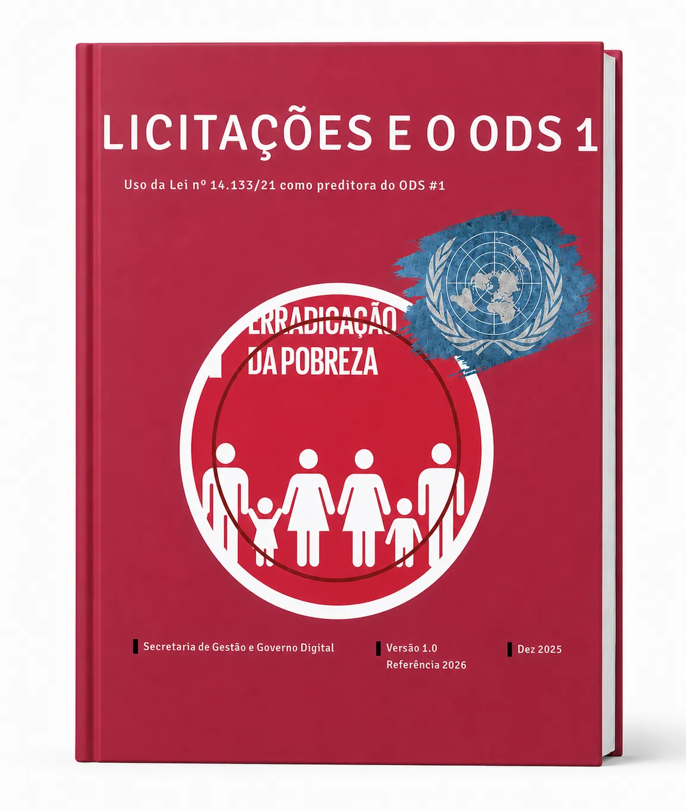
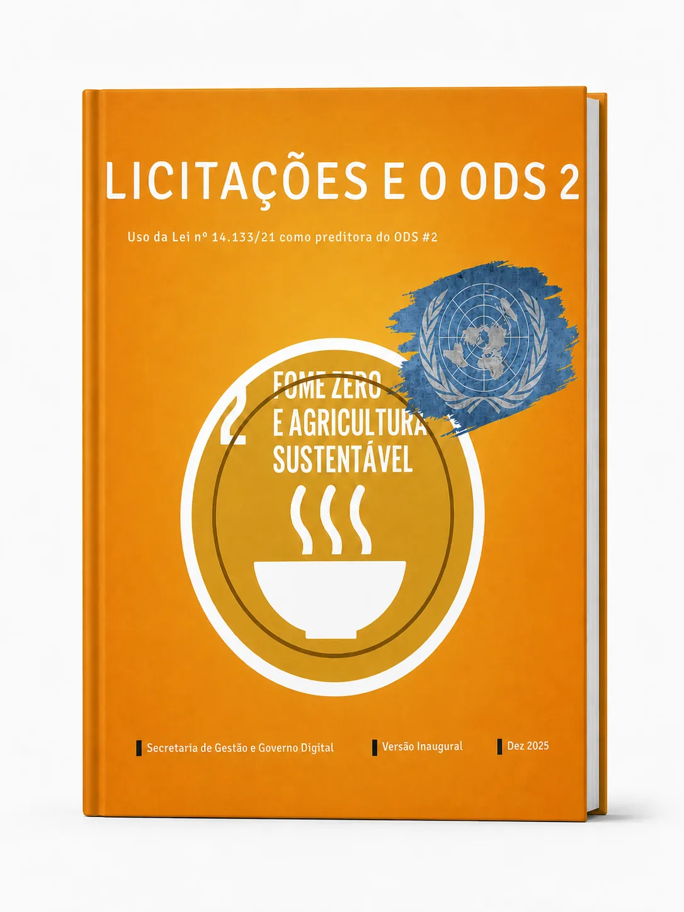
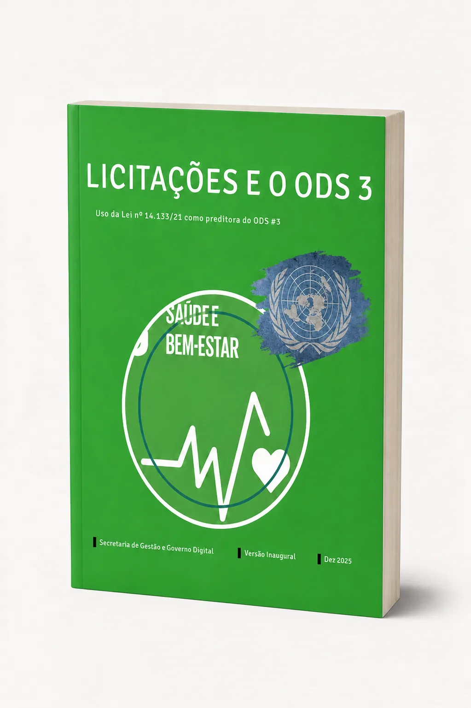
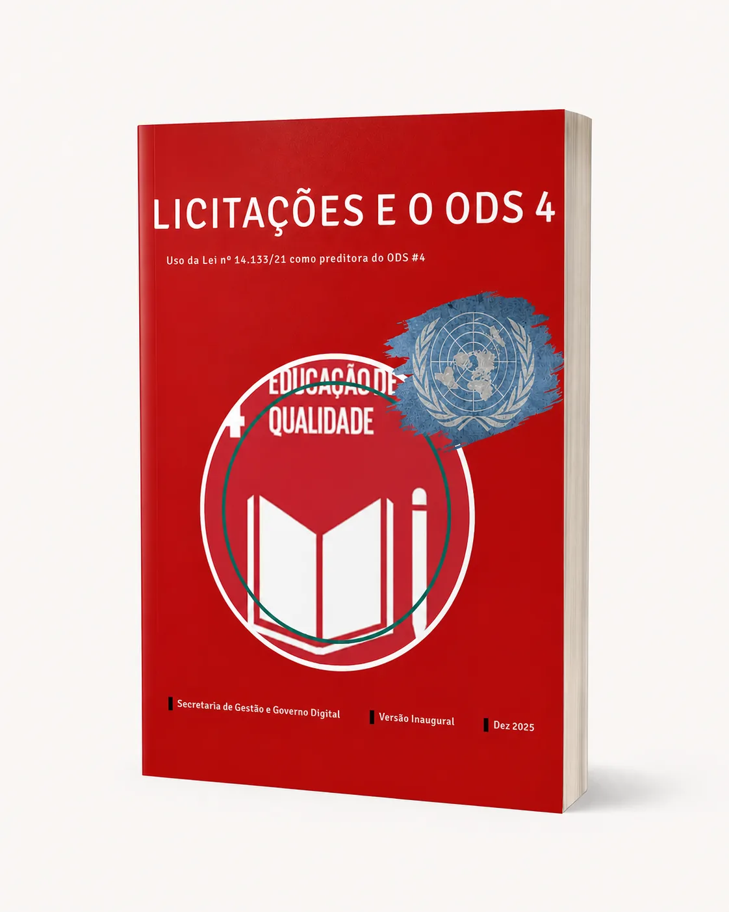

ODS 1
Licitações e o ODS 1
Erradicação da Pobreza
Orientações sobre como a Lei nº 14.133/2021 pode ser utilizada para promover ações que contribuam para a erradicação da pobreza.
Acessar publicaçãoColeção do Laboratório de
Inovação em Logística Pública
Série de referências técnicas que apresenta orientações práticas sobre o uso da Lei nº 14.133/2021 como indutora dos Objetivos de Desenvolvimento Sustentável (ODS) nas contratações públicas estaduais.
Selecione uma publicação para abrir o leitor digital oficial.

Erradicação da Pobreza
Orientações sobre como a Lei nº 14.133/2021 pode ser utilizada para promover ações que contribuam para a erradicação da pobreza.
Acessar publicação
Fome Zero e Agricultura Sustentável
Diretrizes para incorporar práticas que incentivem a segurança alimentar, a agricultura sustentável e o uso responsável dos recursos naturais.
Acessar publicação
Saúde e Bem-estar
Orientações para contratações públicas que contribuam para a promoção da saúde, qualidade de vida e bem-estar da população.
Acessar publicação
Educação de Qualidade
Boas práticas e critérios para contratações que apoiem o acesso à educação de qualidade e a formação cidadã.
Acessar publicaçãoOs Cadernos ODS foram elaborados pelo Laboratório de Inovação em Logística Pública de São Paulo para apoiar gestores públicos na aplicação da Lei nº 14.133/2021 como instrumento de promoção dos Objetivos de Desenvolvimento Sustentável da Agenda 2030 da ONU nas contratações públicas estaduais.
Cada publicação apresenta conceitos, exemplos práticos, critérios e referências que auxiliam nas diferentes fases das contratações públicas, desde o planejamento até a execução contratual.
Saiba mais sobre a coleção